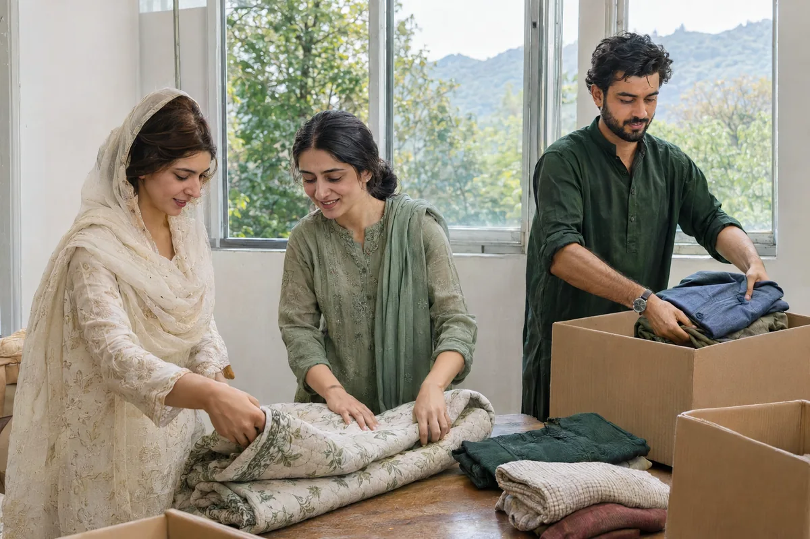
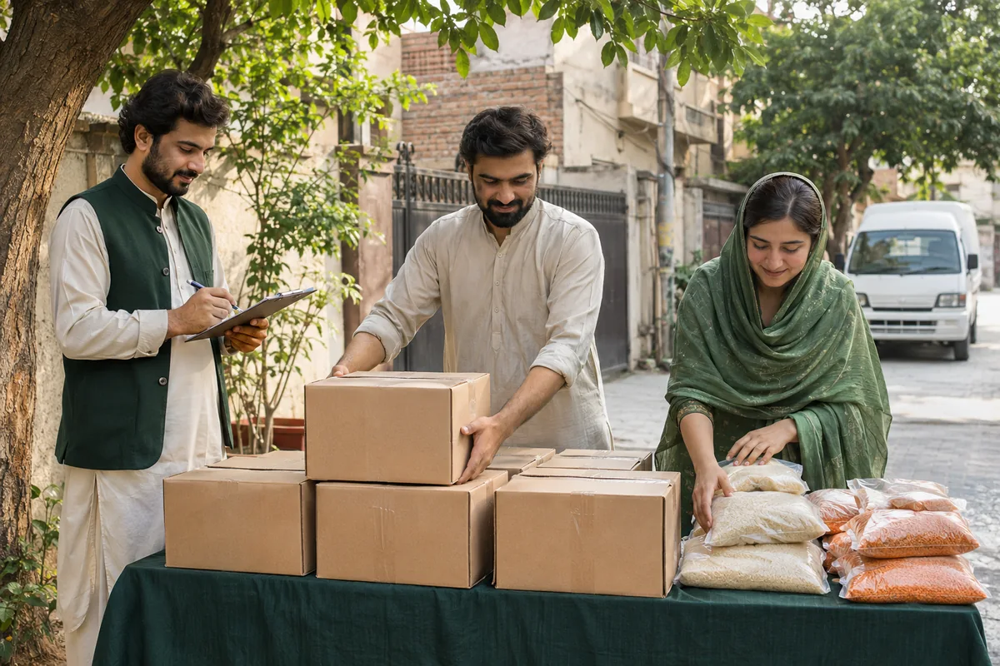

Give with purpose.
Help where it matters.
Find what your community needs, pledge useful items, and choose a collection time. AMANAT brings donation drives across Islamabad and Rawalpindi into one clear, organized place.
Student project with sample data. No real donations are processed.


Make community giving easier to coordinate.
Donation efforts need more than good intentions. Donors need to know which items are useful, how much is still needed and where to take them. Organizers need a clear record of commitments and space to receive them. AMANAT brings those details together.
Find a collection hub ↗From intention
to a recorded pledge.
- 01
Choose a drive
Browse active requirements and check the remaining need and item quality rules.
- 02
Plan your contribution
Enter your quantity and choose an available collection window. The desk checks capacity as you go.
- 03
Keep your receipt
Save a local record of your pledge. You can review or revoke it from the donation desk.
Find a need you can help meet.
Start with the drives, or check a nearby collection hub.